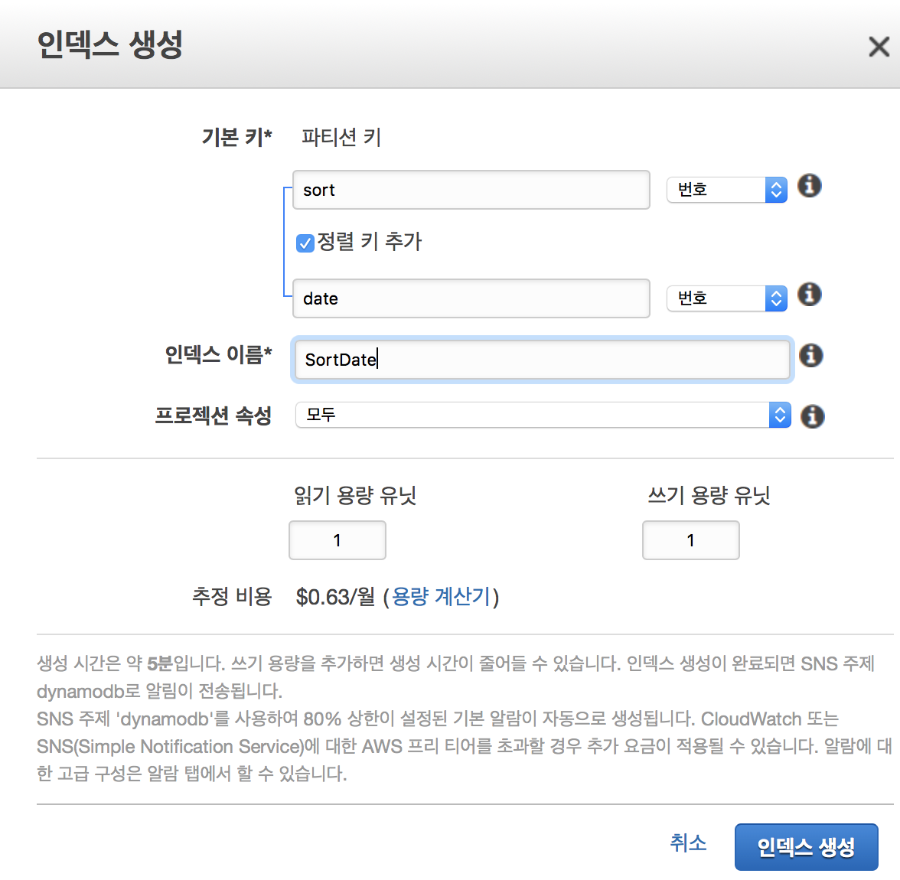

AWS DynamoDB query order
미션 전체 데이터를 최근순으로 가져온다. 🐏
다이나모디비의 키 구성
다이나모디비는 필수적인 해시키와 추가적으로 정렬키를 할당해서 기본키를 이룰 수 있다.
Scan vs Query
스캔은 모든 항목을 읽어온다. 그 중간에 필터를 걸어서 원하는 것 만을 뽑아 올 수 있지만 기본적으로 모든 다큐먼트(레코드)를 검색하기에 그만큼의 비용이 소모된다.
필터는 가능하지만 정렬은 가능하지 않ㄴ다.
Query
때문에 정렬을 위해서는 Query를 통해서 데이터를 가져와한다. 쿼리는 기본인자로 해시키를 받는다. 정렬은 정렬키를 통해서 이루어지는데 해시키를 주게되면 데이터셋이 한정되므로 데이터 전체에 대한 정렬을 원하는 내게 원하는 동작은 아니다.
때문에 이를 위해선 꽤 번거로운 작업을 필요로 한다. 내가 찾은 방법은 GSI를 이용하는 방법이다. 인덱스의 형식에는 GSI와 LSI가 존재한다.
Global Secondary Index(GSI) vs Local Secondary Index(LSI)
GSI와 LSI의 차이는 기본적으로 해시키를 테이블 정의시의 해시키를 그대로 활용하고 정렬키만 바꾸는가 아니면 해시키까지 다시 정의하는 가에 대한 차이가 있다.
Query 👭 GSI
다시 쿼리로 돌아와서 미션을 해결하고자 GSI를 생성했다. 쿼리에서는 기본적으로 해쉬키를 건내야한다. 쿼리를 날리기 위한 데이터셋을 정의하는 행동인데 전체로하므로 어글리하게도 상수 값을 속성하나에 할당하기로 한다. 예를들어 sort 라는 속성을 해시키로 할당하고 모든 도큐먼트(record)에 대해서 동일한 값을 줘서 전체를 데이터셋으로 만드는 내용이다.
GSI 생성

그럼 GSI를 생성하기 위해 다이나모 테이블에서 인덱스를 선택하고 GSI를 생성한다. 해쉬값에는 위에서 얘기한데로 sort라는 이름을 주고 타입을 번호로 설정했다. 바이너리로 설정하니 aws-sdk의 DynamoDBClient 에서 접근하기가 어려웠다.
정렬키에는 정렬의 기준이 되고자 하는 속성을 선택해야한다. createAt 등등 사용하고 있는 이름이 있을거다. 난 date 였다. 때문에 date 를 넣고 그에 맞는 속성을 줬다. 난 번호 였다.
생성에는 5분정도 시간이 걸렸던 것 같다. 기존 데이터의 양과 프로비저닝된 용량에 따라 시간이 더 소모될 수 있다.
인덱스의 이름은 편할 걸 넣어주면된다. 아래서 작성 할 코드에서는 PascalCase 형식으로 이름을 작성했다.
데이터를 추가
데이터를 추가할때 sort: 0 이 반드시 추가되야한다. 그래야지만 인덱싱이 가능하다. 0은 우리가 번호 타입을 설정했고 모든 데이터를 묶기 위해 동일한 숫자로 선택했을 뿐 다른 의미는 없다.
기존 데이터들이 있다라면 모두 업데이트를 쳐줘야한다. ⛈
Code
1 | import * as AWS from 'aws-sdk' |
ScanIndexForward
이 파라메터를 통해 오름차순(true default)과 내림차순(false)이 결정된다. 정렬은 정렬키를 통해서 이루어지므로 코드에는 명시되지 않았지만 IndexName 을 통해 date 정렬키를 보유한 인덱스를 가리키고 있다.
⚠ 주의할 점
테이블이 생성되었고 GSI를 생성하기 전에 sort: number 형식으로 데이터를 이미 생성했다고 가정해보자. 아무래도 DynamoDBClient 의 put을 통하면 Binary 형식 입력이 되지 않는 것으로 보이는데 때문에 sort: number 가 도큐먼트에 들어간 상태에서 GSI를 sort: binary 형식으로 생성하게 되면 이 데이터들이 인덱싱이 되지 않는다.
또한 더 골때리는 것은 애매 모호한 에러를 내면서 query 도 동작하지 않으니 주의하자.
💁 말을 다소 혼용해서 했는데 number 는 번호, binary 는 이진수를 의미한다.